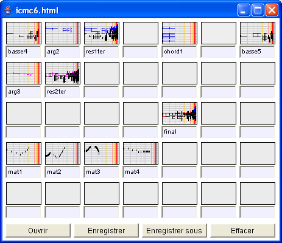

La fenêtre document permet de conserver des expressions musicales durant le travail et de sauver / restaurer ces expressions. Les documents Elody sont sauvés au format HTML. Il est ainsi possible de visualiser des expressions Elody avec un navigateur tel que Mozilla Firefox par exemple. L'extension .html du fichier doit être explicitement ajoutée pour qu'ensuite Elody puisse reconnaître et charger les fichiers. Les objets musicaux peuvent être nommés. Pour effacer le contenu d'une case, il suffit de glisser le contenu d'une « case vide » sur la case à effacer.